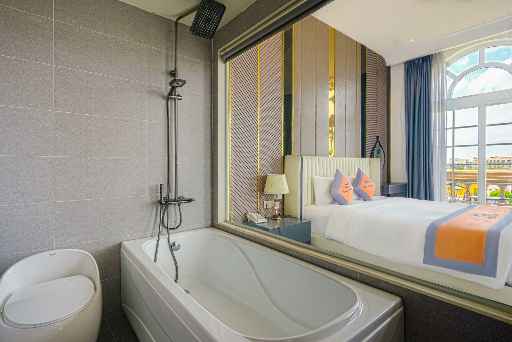

Tiếng Việt
Tiếng Việt English
English 한국어
한국어 中文
中文 Русский
Русский Deutsch
Deutsch
같은 호텔이라도 객실마다 전혀 다른 휴가를 선사합니다. 문을 열면 바로 수영장인 객실, 큰 유리창 옆에 욕조가 있는 객실, 침대 두 개와 논이 내려다보이는 발코니가 있는 객실도 있습니다. 이 글은 CGP 럭셔리 호텔 호이안의 각 객실 유형을 이해하고 장점을 비교해 여행에 가장 잘 맞는 객실을 고를 수 있도록 도와드립니다.
CGP 객실 한눈에 보기
CGP 럭셔리 호텔에는 총 23개 객실이 있으며 면적은 35~40㎡입니다. 모든 손님을 세심하게 돌볼 수 있고 진정한 휴식을 누릴 만큼 조용한 적당한 규모입니다. 호텔은 호이안 구시가지에서 약 1km, 안방 해변에서 약 3km 거리에 있어 어느 객실을 선택하든 주요 명소로 쉽게 이동할 수 있습니다.
모든 객실은 동일한 기본 편의시설을 갖추고 있어 낮은 등급을 선택해도 품질 걱정은 없습니다. 차이는 위치, 전망, 침대 배치, 그리고 욕조나 수영장으로 열리는 문 같은 특별한 포인트에 있습니다.
푹신한 침대, 하얀 침구
하얀 침구의 넓은 더블 또는 킹 베드, 장식 쿠션, CGP 로고 자수 수건을 매일 새로 교체합니다.
큰 창과 발코니
자연광이 가득한 객실로, 많은 객실에 호이안 시내나 논이 보이는 발코니가 있습니다.
완벽한 편의시설
에어컨, 평면 TV, 전기 주전자, 미니 냉장고, 목욕 가운, 실내화와 무료 세면도구.
뛰어난 방음
창문과 발코니에 방음 시설이 있어 바깥이 활기찬 날에도 편히 잠들 수 있습니다.
킹 스위트 풀 액세스, 가든 뷰
101호와 102호는 1층에 있으며 손님들이 가장 좋아하는 객실 중 하나입니다. 큰 슬라이딩 유리문이 수영장 옆 나무 테라스와 정원으로 바로 열리는 것이 특징입니다. 아침에 문을 열고 몇 걸음만 걸으면 조식 전에 수영을 즐길 수 있습니다.

객실 안에는 구름무늬 대리석 헤드보드, 시원한 비취색 석재 바닥, 하얀 침구를 깐 넓은 더블 침대와 CGP 로고 자수 장식 천이 있습니다. 유리 칸막이 샤워실, 달걀 모양 변기와 둥근 대리석 세면대가 깔끔하고 현대적입니다. 스마트 TV와 화장대가 있어 외출 준비도 편합니다.
이런 분께 추천합니다수영을 좋아하는 커플, 엘리베이터를 이용하지 않고 편하게 다니고 싶은 분, 수영장 옆 작은 빌라 같은 느낌을 원하는 분.
슈피리어 룸
103호는 짧은 여행에 알맞은 아늑하고 깔끔한 객실입니다. 짙은 나무 톤과 시원한 녹색 석재 바닥이 편안한 공간을 만듭니다. 침대 위에는 베트남 논을 그린 유화가 걸려 있어 작지만 감성적인 예술적 포인트가 됩니다.


입구 옆에 옷장, 거울 달린 책상, 미니 냉장고, 전기 주전자가 깔끔하게 배치되어 있습니다. 밝은 욕실에는 샤워기, 석재 세면대, CGP 수건이 준비되어 있습니다. 출장 중이거나 저녁에 조용히 일할 공간이 필요하거나, 구시가지를 둘러본 뒤 깨끗하고 예쁜 방에서 잠만 자면 되는 분께 슈피리어 룸은 매우 합리적인 선택입니다.
킹 스위트 발코니, 시티 뷰
조금 더 고급스러움을 원하는 분을 위한 객실입니다. CGP에는 이 등급에 두 가지 스타일이 있으며, 모두 킹 베드, 욕조, 호이안 시내 전망을 갖추고 있습니다.
301호: 양면 창이 있는 코너 객실
301호는 프렌치 스타일 창문이 줄지어 있어 호이안의 기와지붕과 멀리 들판이 보이는 코너 객실입니다. 침대 발치의 하얀 가죽 소파, 물결무늬 파란 카펫, 금색 라인을 두른 나무 벽이 고급스러우면서도 따뜻한 느낌을 줍니다. 욕실에는 욕조와 침실 쪽 큰 유리창이 있어, 저녁에 커튼만 치면 나만의 프라이빗한 휴식 공간이 됩니다.

500호: 클래식 아치와 하늘이 보이는 욕조
500호에는 하얀 아치형 문이 난간 발코니로 열리며 호이안 시내와 파란 하늘이 한눈에 들어옵니다. 크림색 가죽 헤드보드, 금색 라인의 패브릭 벽, 온 가족이 둘러앉을 수 있는 넓은 소파 베드가 있습니다. 가장 큰 매력은 큰 유리창 바로 옆의 욕조로, 몸을 담근 채 아치형 문과 오후 햇살을 바라볼 수 있습니다. 도자기 어메니티, CGP 자수 수건, 고급 세면도구가 준비되어 있습니다.


이런 분께 추천합니다신혼여행, 결혼기념일 여행, 또는 긴 하루를 욕조에 몸을 담그고 시내를 바라보며 마무리하고 싶은 분.
디럭스 더블
디럭스 더블 역시 두 가지 스타일이 있으며, 소가족과 밝은 공간을 좋아하는 커플에게 잘 맞습니다.
501호: 침대 두 개와 들판이 보이는 발코니
501호에는 테라코타색 패브릭 헤드보드의 더블 침대 하나와 싱글 침대 하나가 있습니다. 3인 가족이나 친구 여행에 아주 좋은 선택입니다. 유리문은 프렌치 스타일 발코니로 열리고 멀리 푸른 논과 호이안의 지붕이 보입니다. 긴 옷장, TV, 차와 커피 코너, 유리벽 욕실 덕분에 온 가족이 머무는 내내 편안합니다.

502호: 햇살 가득한 큰 유리 아치
502호는 발코니로 열리는 큰 유리 아치문이 돋보이며, 아침부터 오후까지 자연광이 방 안을 가득 채웁니다. 테라코타색 헤드보드의 더블 침대, 짙은 나무 TV 벽, 티 테이블과 생수가 준비된 미니바가 있습니다. 현대적인 욕실에는 환기창이 있습니다. 밝고 통풍이 잘 되며 조용한 객실을 원하는 커플에게 이상적입니다.

빠른 비교표
| 객실 유형 | 객실 번호 | 침대 | 특징 | 추천 대상 |
|---|---|---|---|---|
| 킹 스위트 풀 액세스 | 101, 102 | 넓은 더블 | 수영장 테라스로 열리는 슬라이딩 문 | 수영을 좋아하는 커플 |
| 슈피리어 룸 | 103 | 더블 | 책상, 유화 | 출장, 짧은 여행 |
| 킹 스위트 발코니 | 301, 500 | 킹 | 욕조, 발코니, 시티뷰 | 신혼여행, 기념일 |
| 디럭스 더블 (501) | 501 | 더블 1 + 싱글 1 | 들판이 보이는 발코니 | 3인 가족 |
| 디럭스 더블 (502) | 502 | 넓은 더블 | 유리 아치, 풍부한 햇살 | 밝은 방을 좋아하는 커플 |
객실 요금은 시즌과 요일에 따라 달라집니다. 정확한 요금은 예약 페이지에서 날짜를 선택해 확인하거나, 객실 페이지에서 각 객실의 사진을 자세히 보세요.
여행 유형별 객실 선택
아직 고민 중이시라면 먼저 이렇게 질문해 보세요. 이번 여행의 목적은 무엇인가요? 많은 손님을 맞이한 경험을 바탕으로 프런트 팀이 추천합니다.
- 신혼여행, 기념일
킹 스위트 발코니 선택
창가의 욕조, 전용 발코니, 킹 베드는 특별한 날을 위한 완벽한 조합입니다. 허니문 패키지나 기념일 패키지와 함께하면 객실 장식과 작은 서프라이즈가 더해집니다.
- 휴식 여행
킹 스위트 풀 액세스 선택
문을 열면 수영장이 보이는 것만큼 여유로운 것은 없습니다. 하루 중 언제든 수영하고, 나무 테라스에서 책을 읽고, 객실 바로 앞에서 플로팅 조식을 즐기세요.
- 어린 자녀와 가족 여행
디럭스 더블 501호 선택
더블 침대와 싱글 침대로 온 가족이 편히 잠들 수 있습니다. 들판이 보이는 발코니에서 아이들은 아침마다 물소와 백로를 구경할 수 있습니다. 4박 패밀리 홀리데이 패키지도 참고하세요.
- 출장, 장기 투숙
슈피리어 룸 선택
깔끔하고 책상이 있으며 긴 여행에 합리적인 가격입니다. 일주일 머문다면 워크 & 릴랙스 패키지로 더 절약할 수 있습니다.
- 혼자 여행
디럭스 더블 502호 선택
밝고 조용하며 발코니가 있는 객실은 책을 읽고 일기를 쓰며 재충전하기에 이상적입니다. 솔로 이스케이프 컬렉션에는 3박, 5박, 7박 패키지가 있습니다.
원하는 객실을 꼭 받고 싶다면?일부 객실 유형은 한두 개뿐입니다. 500호나 101호를 원하신다면 예약 시 메모를 남기거나 특히 성수기와 주말에는 프런트에 일찍 연락해 주세요.
알아 두면 좋은 공용 시설
어느 객실에 묵든 야외 수영장, 가든 카페, 호텔 레스토랑을 이용할 수 있으며 수영장은 무료입니다. 수영장 플로팅 조식은 최소 하루 전에 예약해야 합니다. 구시가지나 짜꿰 채소 마을을 둘러볼 수 있도록 자전거도 준비되어 있습니다. 프런트는 24시간 운영되며 투어, 차량, 공항 픽업(유료) 예약을 도와드립니다.


자주 묻는 질문
욕조가 있는 객실은 어디인가요?
킹 스위트 발코니(301호, 500호)에 욕조가 있습니다. 다른 객실은 샤워 부스가 있습니다.
3인 가족에게 맞는 객실은?
디럭스 더블 501호에는 더블 침대 하나와 싱글 침대 하나가 있어 자녀 한 명과 함께하는 가족에게 적합합니다.
체크인과 체크아웃 시간은?
체크인은 14:00부터, 체크아웃은 12:00 이전입니다. 얼리 체크인이나 레이트 체크아웃은 객실 상황에 따라 가능합니다.
특정 객실을 요청할 수 있나요?
네. 예약 시 메모를 남기거나 (+84) 905 926 638로 프런트에 전화해 주세요. 최대한 원하시는 대로 배정해 드리겠습니다.